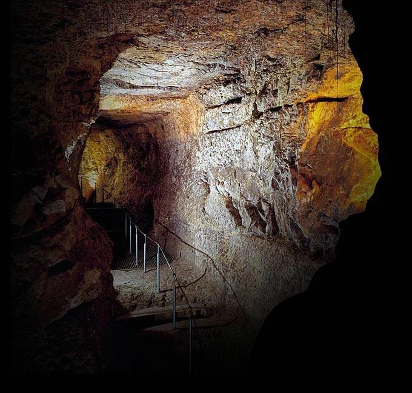
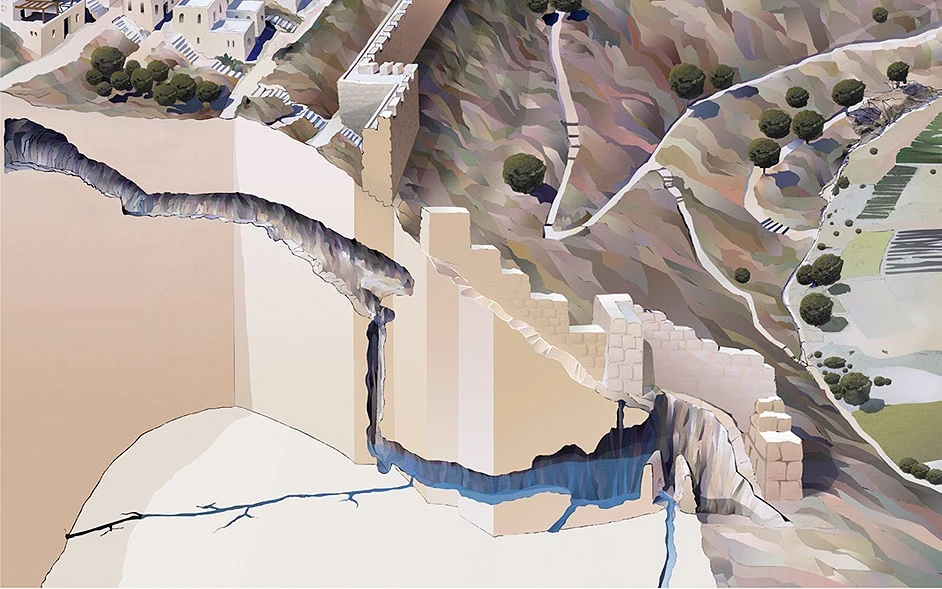

RECOVERED · VIDEO/START.FLV
City of David — Introduction
Original Flash video, converted to H.264/AAC MP4 without changing the source content. Approximately 1 minute and 23 seconds.
Save the restored MP4 ↧
♫RECOVERED · BGSOUND.SWF
Original background music
5,554 original Flash audio blocks reassembled into a 3-minute, 4-second MP3.
Save original music ↧
RECOVERED · EMBEDDED VIDEO
Water System sequence
A short archaeological animation recovered from CityofDavidWaterSystem.swf.
View in Archaeology →